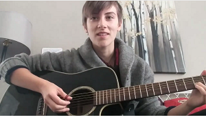

|
|
SOUNDS |
|
"Deadly Harvest - Hiroshima Memorial Video" Created: Aug 2021 Posted: 12 Aug 2021 Creator: Tim Kitz/Wychwood Music Chords adapted from Koki Kinoshita Length of Recording: 2:07 Click image below to Play:
"Winter Poem" Created: 2021 Posted: 18 Apr 2021 Creators: Music & Poetry: Susan McMaster (words). Alrick Huebener (music, video, photography). Ian McMaster: photo. Length of Recording: 4m 29s Click image below to Play: 
"Requiem for Organ Music" Created: 2020 Posted: 18 Apr 2021 Creators: SugarBeat Music & Poetry and many friends: Susan McMaster (words). Alrick Huebener (music, video, production). See video for complete credits. Length of Recording: 4m 53s Click image below to Play: "Ambient Banjo Over Falling Snow" Created: Feb 2021 Posted: 15 Mar 2021 Creator: Tim Kitz Length of Recording: 1:11 Click image below to Play:
I've let it sit in silence, so now I'm letting it out as a statement that I've been called to make.  "Original guitar instrumental" written after a festival in Coombes on Vancouver Island and performed by Brian. Created: Performed 23 Jul 2020. Posted: 24 Jul 2020 Creator: Brian Length of Recording: Approximate length 3.5 minutes Click image below to Play: |